FUNCIONES EN C++
Elementos de una declaración de función
El tipo de retorno, que especifica el tipo del valor que devuelve la función, o void si no se devuelve ningún valor. En C++11, auto es un tipo de retorno válido que indica al compilador que infiera el tipo de la sentencia de retorno. En C++14, decltype(auto) también está permitido. Para obtener más información, consulte más adelante Deducción de tipos en tipos de valor devueltos.
El nombre de la función, que debe comenzar con una letra o un carácter de subrayado y no puede contener espacios. En general, los caracteres de subrayado iniciales en los nombres de función de la biblioteca estándar indican funciones miembro privadas o funciones que no son miembro que no están diseñadas para su uso por parte del código.
La lista de parámetros, que es un conjunto delimitado por llaves y separado por comas de cero o más parámetros que especifican el tipo y, opcionalmente, un nombre local mediante el cual se puede acceder a los valores de dentro del cuerpo de la función.
constexpr, que indica que el valor devuelto de la función es un valor constante que se puede calcular en tiempo de compilación.
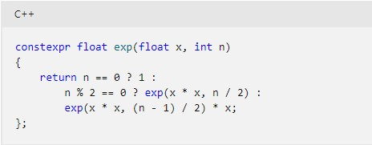Su especificación de vinculación, extern o static.
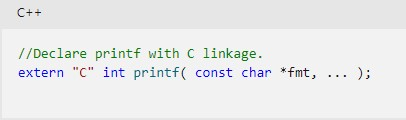inline, que indica al compilador que reemplace todas las llamadas a la función con el propio código de la función. La inserción en línea puede mejorar el rendimiento en escenarios donde una función se ejecuta rápidamente y se invoca varias veces en una sección del código crítica para el rendimiento.
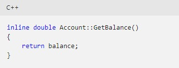Una noexcept expresión que especifica si la función puede o no lanzar una excepción. En el ejemplo siguiente, la función no produce una excepción si la is_pod expresión se evalúa como true.
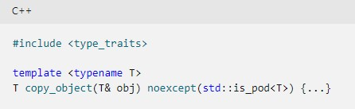(solo funciones miembro) Los calificadores cv, que especifican si la función es const o volatile.
(solo funciones de los miembros) virtual, override, o final. virtual especifica que una función se puede reemplazar en una clase derivada. override significa que una función de una clase derivada reemplaza una función virtual. final significa que una función no se puede invalidar en ninguna clase derivada adicional.
(solo funciones miembro) static aplicado a una función miembro significa que la función no está asociada a ninguna instancia de objeto de la clase .
(solo funciones miembro no estáticas) El calificador de referencia, que especifica al compilador qué sobrecarga de una función, debe elegir cuando el parámetro implícito del objeto (*this) es una referencia rvalue frente a una referencia lvalue.
Definiciones de función
Funciones const y constexpr
Plantillas de función
Parámetros de función y argumentos
Argumentos predeterminados
Tipos de valor devuelto de función
Tipos de valor devueltos finales
Variables locales de función
Devolución de varios valores desde una función
- Encapsular los valores en una clase u objeto struct con nombre. Requiere que la definición de la clase o estructura sea visible para el autor de la llamada: 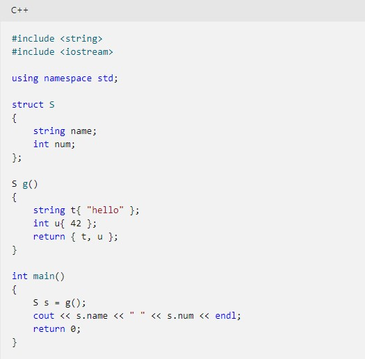
- Devuelve un objeto std::tuple o std::pair:
Además de utilizar el valor de retorno en sí mismo, puede "devolver" valores definiendo cualquier número de parámetros para utilizar el pasado por referencia de manera que la función pueda modificar o inicializar los valores de los objetos que el autor de la llamada proporciona.
Punteros de función
Prototipos
- Establecen el tipo de valor devuelto para funciones que devuelven tipos diferentes de int. Aunque las funciones que devuelven valores int no requieren prototipos, estos se recomiendan.
- Sin prototipos completos se realizan conversiones estándar, pero no se hace ningún intento de comprobar el tipo o el número de argumentos con el número de parámetros.
- Los prototipos se utilizan para inicializar punteros a funciones antes de que se definan esas funciones.
- La lista de parámetros se utiliza para comprobar que los argumentos de la llamada de función coinciden con los parámetros de la definición de función.
PASO DE ARGUMENTOS
VALORES DE RETORNO
MACROS
Una macro es una acción o un conjunto de acciones que se puede ejecutar todas las veces que desee. Cuando se crea una macro, se graban los clics del mouse
y las pulsaciones de las teclas. Después de crear una macro,puede modificarla para realizar cambios menores en su funcionamiento.
RECURSIVIDAD
La recursividad es un concepto fundamental tanto en matemáticas como en computación y se presenta como alternativa para implementar estructuras de repetición,
replicando comportamientos similares a los que obtenemos con los bucles while o los bucles for.
Una función es un bloque de código que realiza alguna operación. Una función puede definir opcionalmente parámetros de
entrada que permiten a los llamadores pasar argumentos a la función. Una función también puede devolver un valor como
salida. Las funciones son útiles para encapsular las operaciones comunes en un solo bloque reutilizable, idealmente
con un nombre que describa claramente lo que hace la función.
La siguiente función acepta dos enteros de un autor de llamada y devuelve su suma; a y b son parámetros de tipo int.

La función puede ser invocada, o llamada, desde cualquier lugar del programa.
Los valores que se pasan a la función son los argumentos, cuyos tipos deben ser
compatibles con los tipos de los parámetros en la definición de la función.
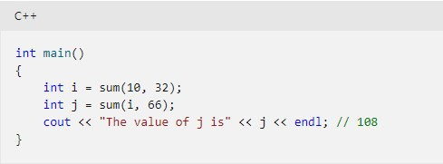
No hay ningún límite práctico para la longitud de la función, pero el buen diseño tiene como objetivo las funciones
que realizan una sola tarea bien definida. Los algoritmos complejos deben dividirse en funciones más sencillas y fáciles
de comprender siempre que sea posible.
Las funciones definidas en el ámbito de clase se denominan funciones miembro. En C++, a diferencia de otros lenguajes,
una función también pueden definirse en el ámbito de espacio de nombres (incluido el espacio de nombres global implícito).
Estas funciones se denominan funciones libres o funciones no miembro; se usan ampliamente en la biblioteca estándar.
Las funciones pueden ser sobrecargadas, lo que significa que diferentes versiones de una función pueden compartir
el mismo nombre si difieren por el número y/o tipo de parámetros formales.
Una declaración de función mínima consta del tipo de valor devuelto, el nombre de la función y la lista de parámetros
(que pueden estar vacíos), junto con palabras clave opcionales que proporcionan más instrucciones al compilador.
El siguiente ejemplo es una declaración de función:
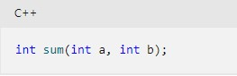
Una definición de función consiste en una declaración, más el cuerpo, que es todo el código entre las llaves:
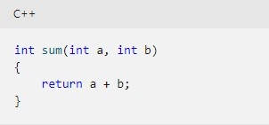
Una declaración de función seguida de un punto y coma puede aparecer en varios lugares de un programa.
Debe aparecer antes de cualquier llamada a esa función en cada unidad de traducción.
La definición de función debe aparecer solo una vez en el programa, según la regla de una definición (ODR).
Los elementos necesarios de una declaración de función son los siguientes:
Los elementos opcionales de una declaración de función son los siguientes:
Una definición de función consiste en la declaración y el cuerpo de la función, encerrado entre llaves, que contiene declaraciones de variables, sentencias y expresiones. El siguiente ejemplo muestra una definición de función completa:
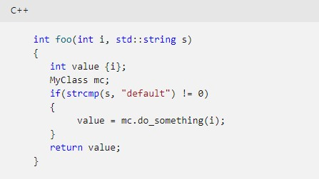Las variables declaradas dentro del cuerpo se denominan variables locales. Se salen del ámbito cuando finaliza la función; por lo tanto, una función nunca debe devolver una referencia a una variable local.

Puede declarar una función miembro como const para especificar que la función no puede cambiar los valores de los miembros de datos de la clase. Al declarar una función miembro como const, se ayuda al compilador a imponer la const-corrección. Si alguien intenta por error modificar el objeto utilizando una función declarada como const, se produce un error del compilador.
Declarar una función como constexpr cuando el valor que produce puede ser determinado en tiempo de compilación. Una función constexpr generalmente se ejecuta más rápido que una función regular.
Una plantilla de función es parecida a una plantilla de clase; genera funciones concretas que se basan en los argumentos de plantilla. En muchos casos, la plantilla es capaz de inferir los argumentos de tipo, por lo que no es necesario especificarlos de forma explícita.

Una función tiene una lista de parámetros separados por comas de cero o más tipos, cada uno de los cuales tiene un nombre mediante el cual se puede acceder a ellos dentro del cuerpo de la función. Una plantilla de función puede especificar más parámetros de tipo o valor. El llamador pasa argumentos, que son valores concretos cuyos tipos son compatibles con la lista de parámetros.
De forma predeterminada, los argumentos se pasan a la función por valor, lo que significa que la función recibe una copia del objeto que se pasa. En el caso de objetos grandes, la realización de una copia puede ser costosa y no siempre es necesaria. Para hacer que los argumentos se pasen por referencia (concretamente por referencia lvalue), agregue un calificador de referencia al parámetro:
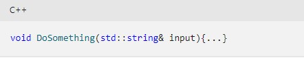Cuando una función modifica un argumento que se pasa por referencia, modifica el objeto original, no una copia local. Para evitar que una función modifique un argumento de este tipo, califique el parámetro como const&:

Para manejar explícitamente los argumentos que se pasan por una referencia rvalue o lvalue, utilice un doble comercial en el parámetro para indicar una referencia universal:

Una función declarada con la palabra clave única void en la lista de declaración de parámetros no toma argumentos, siempre que la palabra clave void sea el primer y único miembro de la lista de declaración de argumentos. Los argumentos del tipo void en otra parte de la lista producen errores. Por ejemplo:
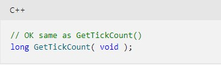Aunque no es válido especificar un void argumento excepto como se describe aquí, los tipos derivados del tipo void (como punteros a void y matrices de void) pueden aparecer en cualquier lugar de la lista de declaraciones de argumentos.
Es posible asignar un argumento predeterminado al último parámetro o parámetros de una firma de función, lo que significa que el llamador puede omitir el argumento cuando se llama a la función, a menos que desee especificar otro valor.
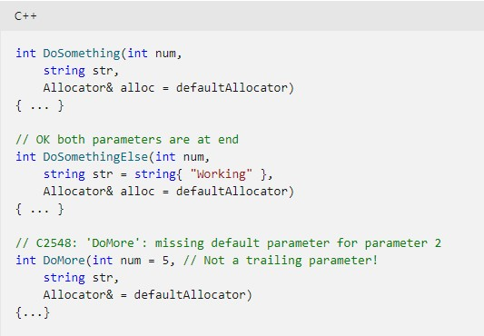Una función no puede devolver otra función, o una matriz incorporada; sin embargo, puede devolver punteros a estos tipos, o una lambda, que produce un objeto de función. Excepto en estos casos, una función puede devolver un valor de cualquier tipo que esté en el ámbito, o puede no devolver ningún valor, en cuyo caso el tipo de retorno es void.
Un tipo de valor devuelto "normal" se encuentra en el lado izquierdo de la firma de función. Un tipo de valor devuelto final se encuentra en el lado derecho de la firma y va precedido por el -> operador . Los tipos de valor devueltos finales son especialmente útiles en plantillas de función cuando el tipo del valor devuelto depende de los parámetros de plantilla.

Cuando auto se usa junto con un tipo de valor devuelto final, sirve como marcador de posición para cualquier elemento que genere la expresión decltype y no realiza la deducción de tipos.
Una variable que se declara dentro del cuerpo de una función se llama variable local o simplemente local. Las variables locales no estáticas solo son visibles dentro del cuerpo de la función y,
si se declaran en la pila, salen del ámbito cuando se cierra la función. Cuando se construye una variable local y se devuelve por valor, el compilador suele realizar la optimización del valor de
retorno con nombre para evitar operaciones de copia innecesarias. Si una variable local se devuelve por referencia, el compilador emitirá una advertencia, ya que cualquier intento por parte del
llamador de usar esa referencia se producirá después de la destrucción de la variable local.
En C++, una variable local se puede declarar como estática. La variable solo es visible dentro del cuerpo de la función, pero existe una copia única de la variable
para todas las instancias de la función. Los objetos estáticos locales se destruyen durante la finalización especificada por atexit.
Si no se construyó un objeto estático porque el flujo de control del programa omite su declaración, no se intenta destruir ese objeto.
Hay varias formas de devolver más de un valor desde una función:

C++ admite punteros de función de la misma manera que el lenguaje C. Sin embargo, una alternativa con mayor seguridad de tipos suele ser usar un objeto de función. Se recomienda que use typedef para declarar un alias para el tipo de puntero de función si declara una función que devuelve un tipo de puntero de función. Por ejemplo,

Si esto no se hace, la sintaxis adecuada para la declaración de función se puede deducir de la sintaxis del declarador para el puntero de función reemplazando el identificador (fp en el ejemplo anterior) por el nombre de las funciones y la lista de argumentos, como se indica a continuación:

La declaración anterior es equivalente a la declaración que usa typedef anteriormente.
Una declaración de función precede a la definición de función y especifica el nombre, el tipo devuelto, la clase de almacenamiento y otros atributos de una función. Para ser un prototipo, la declaración de función también debe establecer tipos e identificadores para los argumentos de la función.
El prototipo tiene la misma forma que la definición de función, excepto que termina con un punto y coma inmediatamente después del paréntesis de cierre y, por consiguiente, no tiene ningún cuerpo. En cualquier caso, el tipo de valor devuelto debe coincidir con el tipo de valor devuelto especificado en la definición de función.
Los prototipos de función tienen los siguientes usos importantes:
El tipo convertido de cada parámetro determina la interpretación de los argumentos que la llamada de función coloca en la pila. Un error de coincidencia de tipos entre un argumento y un parámetro puede provocar que los argumentos de la pila no se interpreten correctamente. Por ejemplo, en un equipo de 16 bits, si se pasa un puntero de 16 bits como argumento y, después, se declara como un parámetro long , los primeros 32 bits de la pila se interpretan como un parámetro long . Este error crea problemas no solo con el parámetro long, sino con todos los parámetros posteriores. Puede detectar errores de este tipo declarando prototipos de función completos para todas las funciones.
Un prototipo establece los atributos de una función. Después se pueden comprobar las llamadas de función que preceden a la definición de función (o que se producen en otros archivos de código fuente) para comprobar si hay discrepancias entre argument-type y return-type. Por ejemplo, si especifica el especificador de clase de almacenamiento static en un prototipo, también debe especificar la clase de almacenamiento static en la definición de función.
Las declaraciones de parámetro completas (int a) se pueden mezclar con declaradores abstractos (int) en la misma declaración. Por ejemplo, la siguiente declaración es válida:

El prototipo puede incluir tanto el tipo como el identificador de cada expresión que se pasa como argumento. Pero tales identificadores solo están en ámbito hasta el final de la declaración. El prototipo también puede reflejar el hecho de que el número de argumentos es variable o que no se pasa ningún argumento. Sin esta lista es posible que las discordancias no se revelen, así que el compilador no puede generar mensajes de diagnóstico relacionados con ellos.
El ámbito de prototipo en el compilador de Microsoft C es ahora compatible con ANSI cuando se compila con la opción del compilador /Za . Si declara una etiqueta struct o union dentro de un prototipo, la etiqueta se introduce en ese ámbito en lugar de en el ámbito global. Por ejemplo, al compilar con /Za para la conformidad con ANSI, nunca se puede llamar a esta función sin obtener un error de coincidencia de tipos:
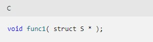Para corregir el código, defina o declare struct o union en el ámbito global antes del prototipo de función:
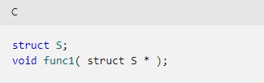En C++, se pueden pasar argumentos por valor o por referencia a la hora de llamar una función o un método de una clase. Cuando pasamos argumentos por valor lo que sucede es que se realiza una copia de los valores que se envían a la función y de esta forma los valores originales permanecen inalterados. Por otro lado, cuando pasamos argumentos por referencia lo que se envía es la dirección de memoria donde se encuentra el valor original y de esta forma se puede modificar el valor original desde dentro de la función
El valor de retorno en C++ es el valor que devuelve una función después de su ejecución. La sentencia return tiene dos usos importantes. Primero, fuerza una salida inmediata de la función en que se encuentra. O sea, hace que la ejecución del programa vuelva al código que llamó a la función. En segundo lugar, se puede utilizar para devolver un valor
En C++, el tipo de retorno especifica el tipo del valor que devuelve la función. Si no se devuelve ningún valor, se utiliza void
Los macros son muy utilizados en C y C++. Estos básicamente son un alias que podemos incluir en nuestro código el cual, al momento de compilar, sera reemplazado por lo que hayamos definido.
Ejemplo.
Este código:
1
2
3
4
5
6
#include
#define VALOR_MACRO 100
int main(){
printf("El valor del macro es: %d", VALOR_MACRO);
}
La salida de este programa es: «El valor del macro es: 100».
// Ejemplo:
// Funciones recursivas: factorial
#include
using namespace std;
long fact(int n)
{
if (n==1) // Aseguramos que termine
return 1;
return n * fact (n-1); // Si no es 1, sigue la recursión
}
int main()
{
int num;
cout << "Introduzca un número entero: ";
cin >> num;
cout << "Su factorial es: " << fact(num) << endl;
return 0;
}